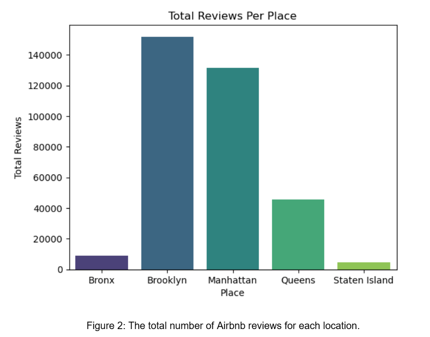
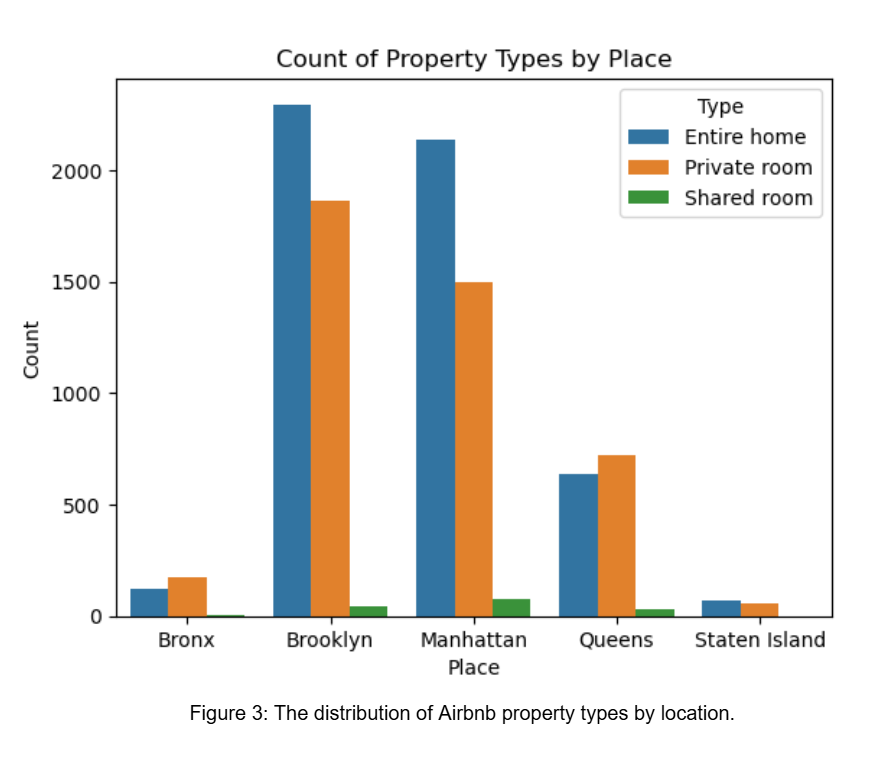
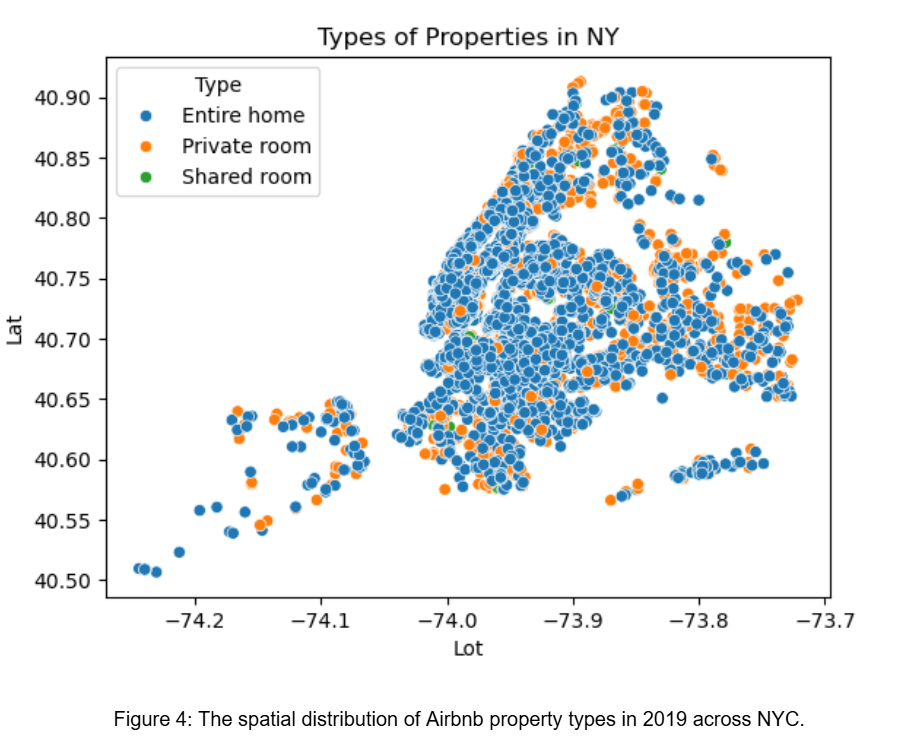
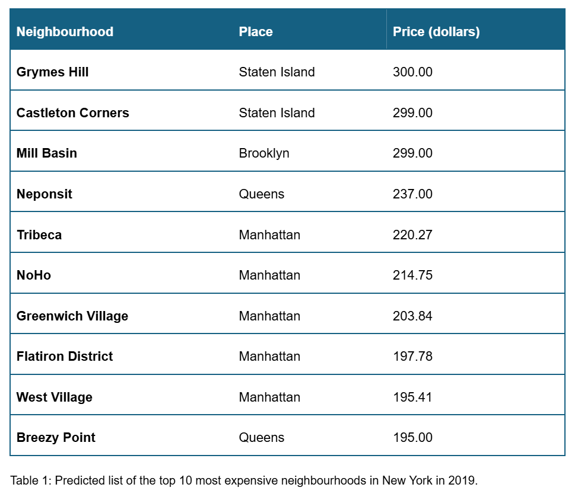
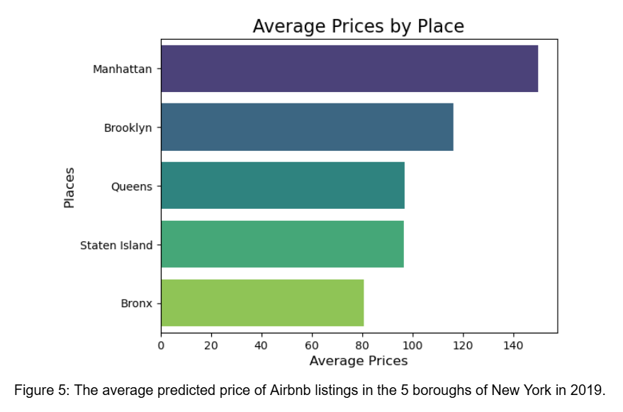
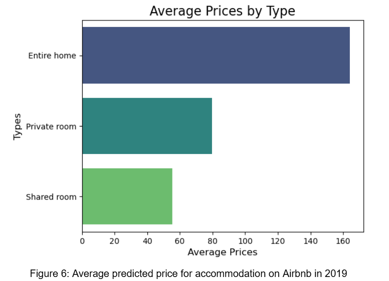
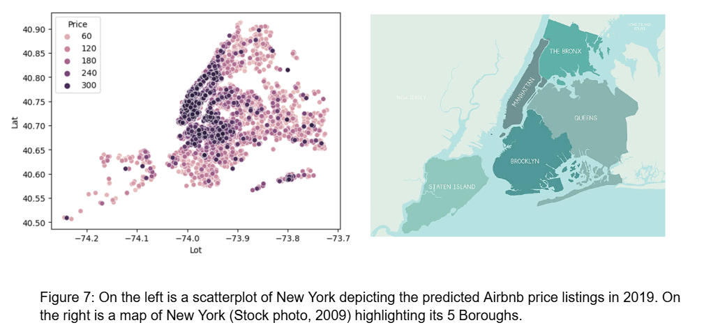

Unit 4. Group project on ML model building

From Data to Decisions: Exploring Airbnb Market Dynamics in New York City
Authors: Natali Nikolić, Nima Osman, Paulina Matkowska, Panagiotis , Mateusz Niewczas.
Introduction:
The Airbnb NYC dataset provides comprehensive information about Airbnb listings in New York City for 2019, covering variables such as neighbourhoods, property types, pricing, availability, host details, and customer reviews. This rich dataset is valuable for analysing market trends, customer preferences, and short-term rental dynamics in one of the world's most competitive markets. It aids Airbnb in data-driven decision-making to optimise pricing, identify high-performing neighbourhoods, and improve resource allocation. By analysing customer demand trends and host behaviour, Airbnb can enhance customer experiences, refine marketing efforts, and uncover growth opportunities in underutilised areas.
1.1 Objective:
Utilising the Airbnb NYC dataset and machine learning models to predict growth trends in Airbnb listings and average pricing for 2019. Methodology:2.1. Methodology Overview
This study used a systematic approach, combining data cleaning, exploratory data analysis (EDA), and predictive modelling. Python was the primary tool with libraries for data manipulation, visualisation, and machine learning.2.2 Data Collection and Preprocessing
The dataset was sourced from a publicly available Airbnb repository. Key variables included room_type, price, latitude, longitude, and number_of_reviews. The preprocessing phase focused on data cleaning to address inconsistencies and missing entries. Null values were imputed, missing categorical data was replaced or flagged, and outliers and faulty data were removed. These steps were applied to all numerical columns.2.3 Exploratory Data Analysis (EDA)
EDA uncovered patterns and relationships within the dataset. Statistical summaries provided an overview of key metrics, while visualisations such as histograms, scatterplots, and box plots highlighted trends and anomalies. The distributions of numerical variables, including price and availability, were examined in detail, while scatterplots of latitude and longitude revealed spatial trends. Additionally, categorical analysis explored room type distributions, and host behaviour. Likewise, all numerical columns were cleansed of outliers and faulty data.2.4 Analytical and Modelling Techniques
Key analytical methods included outlier detection with box plots, trend analysis using correlation coefficients, and neighbourhood grouping for average prices. These techniques helped identify premium and affordable areas while providing insights into market dynamics. The 2019 dataset, with the highest number of properties, contained both active and inactive listings. Historical data (2011–2018) on inactive properties guided a polynomial model, optimised with RMSE, to predict inactive properties in 2019. Subtracting these predictions from total listings refined the dataset. Feature engineering used Scikit-learn’s PolynomialFeatures, and performance was evaluated using MAE, MSE, and R².
2.5 Tools and Technologies
In addition to Python, Pandas was used for data manipulation, while NumPy facilitated numerical calculations. Visualisations were created with Seaborn and Matplotlib, and Scikit-learn was employed for modelling tasks. All analysis was conducted within the Jupyter Notebook environment, ensuring an interactive and iterative workflow.3. Findings:
3.1 Property Types Reflect Neighborhood Trends Across NYC
Our data analysis aligns with Sarkar et al.'s (2020) research on the spatial and socio-economic factors influencing Airbnb hosting in NYC. Northern Brooklyn and Manhattan, as moderately to highly dense areas, stand out as key hubs of activity, marked by high review counts and property types that attract both tourists and locals. Moreover, the popularity of property types is closely tied to the unique characteristics and appeal of different neighbourhoods. Entire homes are prevalent in family-oriented areas like Brooklyn and highly tourist-friendly Manhattan. Private rooms dominate in culturally vibrant and budget-conscious neighbourhoods like northern Brooklyn and Upper Manhattan. Shared rooms, while less common, are typically found in Upper Manhattan, where affordability plays a significant role. 

3.2 Price Trends by Neighbourhood
Table 1 shows that Staten Island has some of the highest-priced properties in NYC, though it’s generally not more expensive than Manhattan (Bentley, 2024). With a mix of affluent and modest areas, the borough offers suburban charm alongside urban amenities. According to Bentley (2024), neighbourhoods like Greenwich Village, SoHo, and Sutton Place are among the priciest for Airbnb rentals. A 2019 dataset reveals Manhattan has the highest average nightly rate at $180, followed by Brooklyn ($121), Queens ($96), and Staten Island ($90) (NYC_AirBNB_Data, 2021; Sudhakar, 2020). Staten Island's higher prices in the dataset may be due to sampling bias, with luxury or unique listings inflating averages. Seasonal pricing, misclassification, or data cleaning errors could also distort results, potentially underrepresenting Manhattan's true average. Real-world data consistently shows Manhattan as the most expensive borough, with an average nightly rate of $180 (Bentley, 2024; NYC_AirBNB_Data, 2021). Figure 4 supports this trend. 

Figure 6 shows that entire homes on Airbnb are typically more expensive than private or shared rooms, reflecting their full privacy and amenities. Entire homes are ideal for families or groups, while private rooms, with shared common areas, attract solo travellers and couples. Shared rooms are the most affordable, catering to budget-conscious guests. These trends align with market demand, with entire homes more common in tourist areas and private rooms in urban settings (Airbnb, 2024). 
Figure 7 shows a concentration of properties around $300 per night in Manhattan, northern Brooklyn, and northwestern Queens. Despite Forest Hills being the priciest area in Queens (Keeling, 2024), the abundance of high-priced listings in the northwestern region is due to its proximity to Manhattan, offering affordable alternatives. Astoria and Long Island City are popular for their vibrant atmospheres, transit access, and proximity to LaGuardia Airport, making them attractive to travellers and renters (McNeil, 2023).
4. Conclusion and Recommendations
The 2019 predictions for Airbnb active listings in New York City, generated through machine learning, revealed key trends across boroughs. Entire homes are expected to remain the most expensive option, dominating tourist-heavy areas like Manhattan and Brooklyn due to the demand for privacy and amenities. Private rooms are predicted to be prevalent in budget-friendly, culturally rich neighbourhoods, while shared rooms will likely attract cost-conscious travellers. The results highlighted a decrease in predicted inactive properties and a shift in market dynamics, emphasising growth in certain boroughs.Recommendations:
References
Airbnb (2024). Airbnb categories - Airbnb Help Center. [online] Airbnb. Available at: https://www.airbnb.com/help/article/3374.
Bentley, A. (2024). 12 Most Expensive Neighborhoods in New York City to Rent in 2024. [online] Apartment Living Tips - Apartment Tips from ApartmentGuide.com. Available at: https://www.apartmentguide.com/blog/most-expensive-neighborhoods-new-york-ny/ [Accessed 27 Nov. 2024].
Keeling, A. (2024). The 8 Best Neighborhoods to Live in Queens - Neighbor Blog. [online] Neighbor Blog. Available at: https://www.neighbor.com/storage-blog/best-neighborhoods-in-queens/ [Accessed 27 Nov. 2024].
McNeil, F.C. (2023). Airbnb Statistics [2023]: User & Market Growth Data. [online] Positionly. Available at: https://positionly.com/blog/stats/airbnb-statistics-2023-user-market-growth-data/.
NYC_AirBNB_Data (2021). GitHub - sevesilvestre/NYC_AirBNB_Data: AIrBNB Dataset Analysis in NYC through Python. [online] GitHub. Available at: https://github.com/sevesilvestre/NYC_AirBNB_Data?tab=readme-ov-file [Accessed 27 Nov. 2024].
Sarkar, A., Gupta, R., Zhang, Z., & Mukherjee, B. (2020) Spatial and socioeconomic analysis of host participation in the sharing economy: Airbnb in New York City. Information Technology & People, 33(3), pp. 983–1009. Available at: https://essex.primo.exlibrisgroup.com/permalink/44UOES_INST/o3t9un/cdi_crossref_primary_10_1108_ITP_10_2018_0481.
Stock photo (2009). [online] Istockphoto.com. Available at: https://www.istockphoto.com/illustrations/nyc-borough-map [Accessed 27 Nov. 2024].
Sudhakar, S. (2020). Analyzing New York City Airbnb Data. [online] Amazonaws.com. Available at: https://rstudio-pubs-static.s3.amazonaws.com/612101_344e3c29505349a488e9ac2e0fcda856.html [Accessed 27 Nov. 2024].